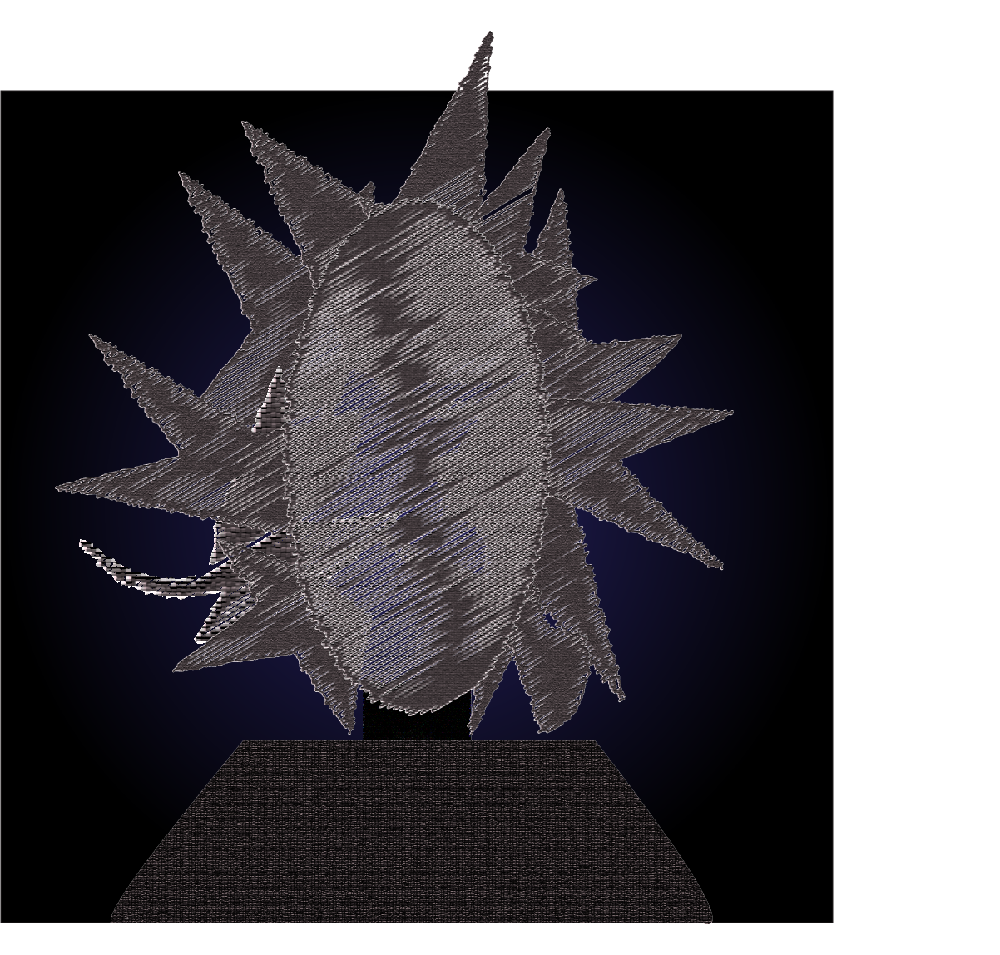

Below shows a sketch conducted by someone who has claimed to see the creature while camping on October 24th, 2006.

"I don't think it knew that I saw it, I mean, I almost didn't at first." The Anonymous individual claims. "...blended in so well with the trees, I would've lost it had it not been for my flashlight. I will say, though, it didn't seem all that hostile."